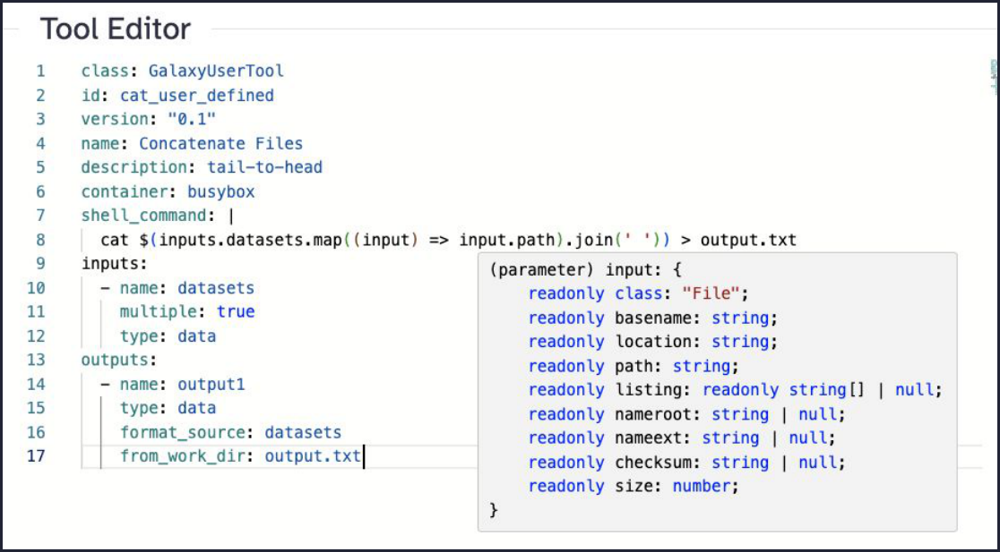
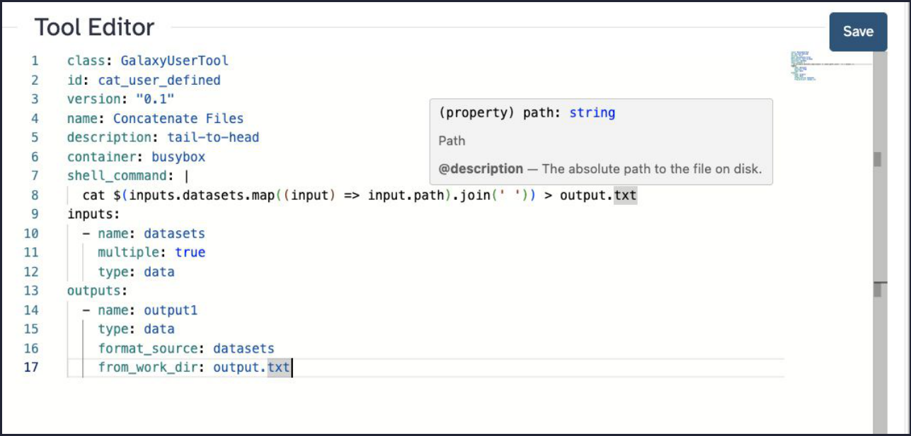
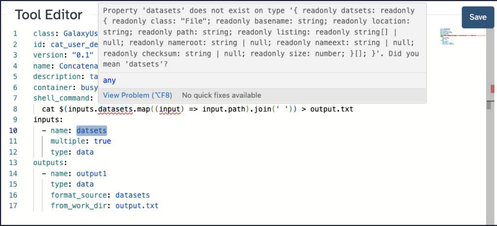

Galaxy Tools 2.0
Bring your own!
Marius van den Beek
PSU / SCI-SCALE
marius@galaxyproject.org
Why can’t users install tools?
- We don’t want to limit what you can do!
- I need “xyz” and it’s not on the server I use, help please?
- You can already run code with RStudio and Jupyter*
- We can isolate storage and compute
Why can’t users install tools?
Templating with Cheetah
1<tool id="cat" version="0.1">2 <description>tail-to-head</description>3 <requirements>4 <requirement type="container">busybox</requirement>5 </requirements>6 <command><![CDATA[7cat8#for dataset in datasets:9 '$dataset'10#end for11> '$output1'12 ]]></command>13 <inputs>14 <input name="datasets" format="data" type="data" multiple="true"/>15 </inputs>16 <outputs>17 <output name="output1" format_source="datasets" />18 </outputs>19</tool>Templating with Cheetah 🎃
1<command><![CDATA[2 #from pathlib import Path3 #user_id = $__app__.model.session().query($__app__.model.User.id).one()4 #open(f"{Path.home()}/a_file", "w").write("Hello!")5]]></command>How do we manage 1000s of tools?

There has to be a better way!
Javascript expressions & JSON inputs
1class: GalaxyUserTool2id: cat_user_defined3version: "0.1"4name: Concatenate Files5description: tail-to-head6container: busybox7shell_command: |8 cat $(inputs.datasets.map((input) => input.path).join(' ')) > output.txt9inputs:10 - name: datasets11 multiple: true12 type: data13outputs:14 - name: output115 type: data16 format_source: datasets17 from_work_dir: output.txtJavascript expressions & JSON inputs
1class: GalaxyUserTool2id: cat_user_defined3version: "0.1"4name: Concatenate Files5description: tail-to-head6container: busybox7shell_command: |8 cat $(inputs.datasets.map((input) => input.path).join(' ')) > output.txt9inputs:10 - name: datasets11 multiple: true12 type: data13outputs:14 - name: output115 type: data16 format_source: datasets17 from_work_dir: output.txt1var inputs = {2 "datasets": [3 {4 "class": "File",5 "location": "step_input://1",6 "format": "csv",7 "path": "/Users/mvandenb/src/galaxy/databa…",8 "basename": "markers.csv",9 "nameroot": "markers",10 "nameext": ".csv"11 }12 ],13 "chromInfo": "/tmp/shared/ucsc/chrom/?.len",14 "dbkey": "?",15 "__input_ext": "input"16};Javascript expressions & JSON inputs
1class: GalaxyUserTool2id: cat_user_defined3version: "0.1"4name: Concatenate Files5description: tail-to-head6container: busybox7shell_command: |8 cat $(inputs.datasets.map((input) => input.path).join(' ')) > output.txt9inputs:10 - name: datasets11 multiple: true12 type: data13outputs:14 - name: output115 type: data16 format_source: datasets17 from_work_dir: output.txt1(parameter) input: {2 readonly class: "File";3 readonly basename: string;4 readonly location: string;5 readonly path: string;6 readonly listing: readonly string[] | null;7 readonly nameroot: string | null;8 readonly nameext: string | null;9 readonly checksum: string | null;10 readonly size: number;11}
Javascript expressions & JSON inputs

Monaco + YAML schemas
1(property) path: string2Path3@description — The absolute path to the file on disk.
Monaco + Typescript interfaces
1Property 'datsets' does not exist on type '{ readonly datasets: readonly2{ readonly class: "File"; readonly basename: string; readonly location:3string; readonly path: string; readonly listing: readonly string[] |4null; readonly nameroot: string | null; readonly nameext: string | null;5readonly checksum: string | null; readonly size: number; }[]; }'.6Did you mean 'datasets'?
Behind the scenes
- Tool parameters are modeled as Pydantic models
- As a general schema that describes “A Galaxy Tool”
- As a specialized schema for “This Galaxy Tool’s Potential Input Object”
- Pydantic models are transformed to JSON schema
- JSON schema is transformed to a TypeScript interface for runtime inputs
- Monaco Editor renders the tool source
- Knows what to do with the YAML schema for the tool
- Understands the TypeScript interface and compares it to the code in JavaScript fragments
Behind the scenes
Generated JSON schema — inputs
1"inputs": {2 "additionalProperties": false,3 "properties": {4 "datasets": {5 "items": {6 "$ref": "#/components/schemas/DataInternalJson"7 },8 "title": "Datasets",9 "type": "array"10 }11 },12 "required": [13 "datasets"14 ],Generated JSON schema — inputs
1"inputs": {2 "additionalProperties": false,3 "properties": {4 "datasets": {5 "items": {6 "$ref": "#/components/schemas/DataInternalJson"7 },8 "title": "Datasets",9 "type": "array"10 }11 },12 "required": [13 "datasets"14 ],Generated JSON schema — DataInternalJson
1"DataInternalJson": {2 "additionalProperties": false,3 "properties": {4 "class": {5 "const": "File",6 "title": "Class",7 "type": "string"8 },9 "basename": {10 "description": "The base name of the file, that is, the nam…",11 "title": "Basename",12 "type": "string"13 },14 "location": {15 "title": "Location",16 "type": "string"17 },18 "path": {19 "description": "The absolute path to the file on disk.",20 "title": "Path",21 "type": "string"22 },23 }24}Enabling User-Defined Tools
- Set
enable_beta_tool_formats: truein your Galaxy configuration. - Create a role of type
Custom Tool Executionin the admin user interface. - Assign users or groups to this role.
Sharing User-Defined Tools
User-defined tools are private to their creators. However, if a tool is embedded in a workflow, any user who imports that workflow will automatically have the tool created in their account.
These tools can also be exported to disk and loaded like regular tools, enabling instance-wide availability if needed.
Sharing User-Defined Tools
User-defined tools are private to their creators. However, if a tool is embedded in a workflow, any user who imports that workflow will automatically have the tool created in their account.
These tools can also be exported to disk and loaded like regular tools, enabling instance-wide availability if needed.
Limitations
The user-defined tool language is still evolving, and additional safety audits are ongoing.
Current limitations include:
- Access to reference data is not supported
- Access to metadata and metadata files (such as BAM indexes) is not supported
- Access to the
extra_filesdirectory is not supported
Coming to a server near you soon!
1class: GalaxyUserTool2id: thank-you3version: "1.0"4name: Thank You!5description: Bring your own gratitude6container: busybox7shell_command: |8 echo "Thank you John Chilton, Dannon Baker, Michael Crusoe,9 Anton Nekrutenko, and the audience at GCC!" > thanks.txt10outputs:11 - name: output112 type: data13 from_work_dir: thanks.txtWith gratitude 💜